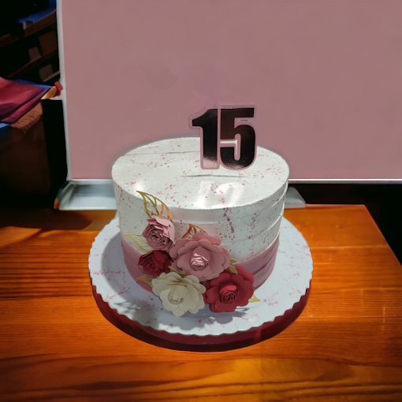

NOSSA HISTÓRIA
Em 2020, durante a pandemia, Gerlene iniciou seu negócio de bolos e doces em casa como alternativa para enfrentar as dificuldades financeiras. No começo, enfrentou desafios na organização profissional e econômica, mas buscou aprimorar sua atuação no mercado. Com a divulgação de seus produtos nas redes sociais, conseguiu aumentar suas vendas e alcançar novos clientes. Apesar das dificuldades para obter lucros significativos, continuou investindo na divulgação e no networking para fortalecer seu negócio e expandir suas oportunidades.
NOSSO DIFERENCIAL
Produção artesanal e atendimento personalizado, proporcionando proximidade com nossos clientes. Por sermos uma doceria residencial, possui flexibilidade para atender encomendas e valorizar cada detalhe de seus produtos. Seu cuidado, dedicação e compromisso com a qualidade contribuem para uma experiência mais acolhedora.